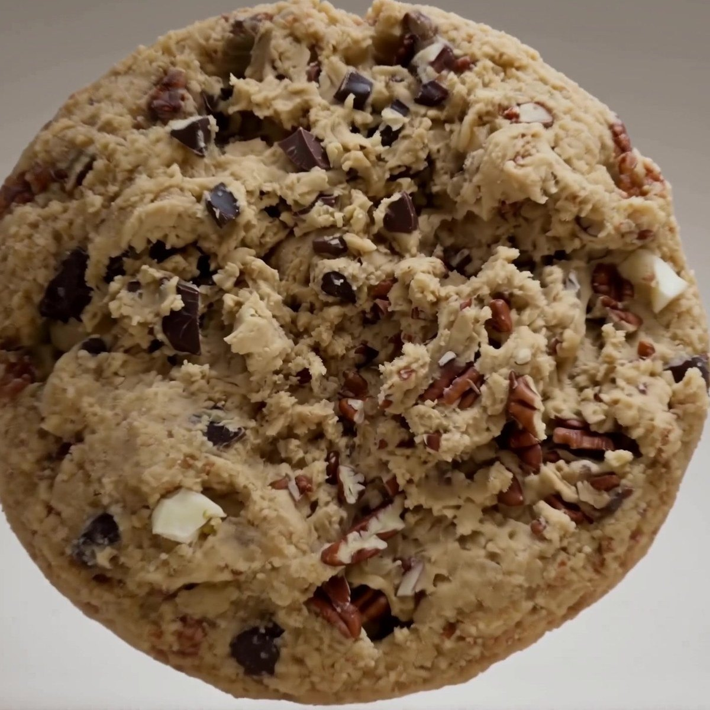
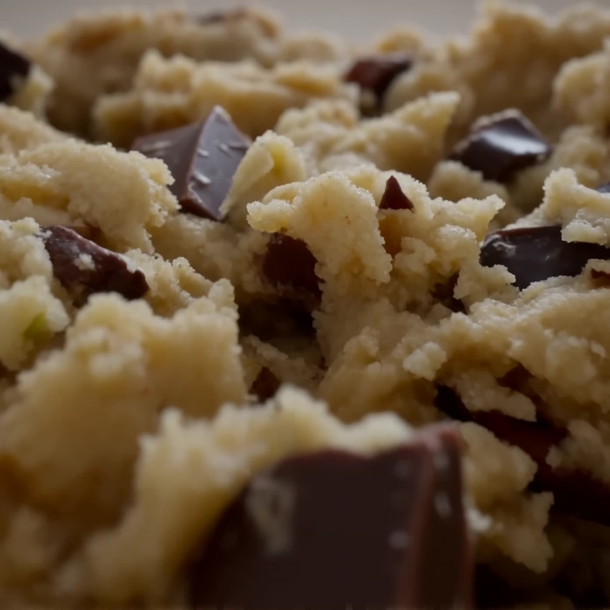
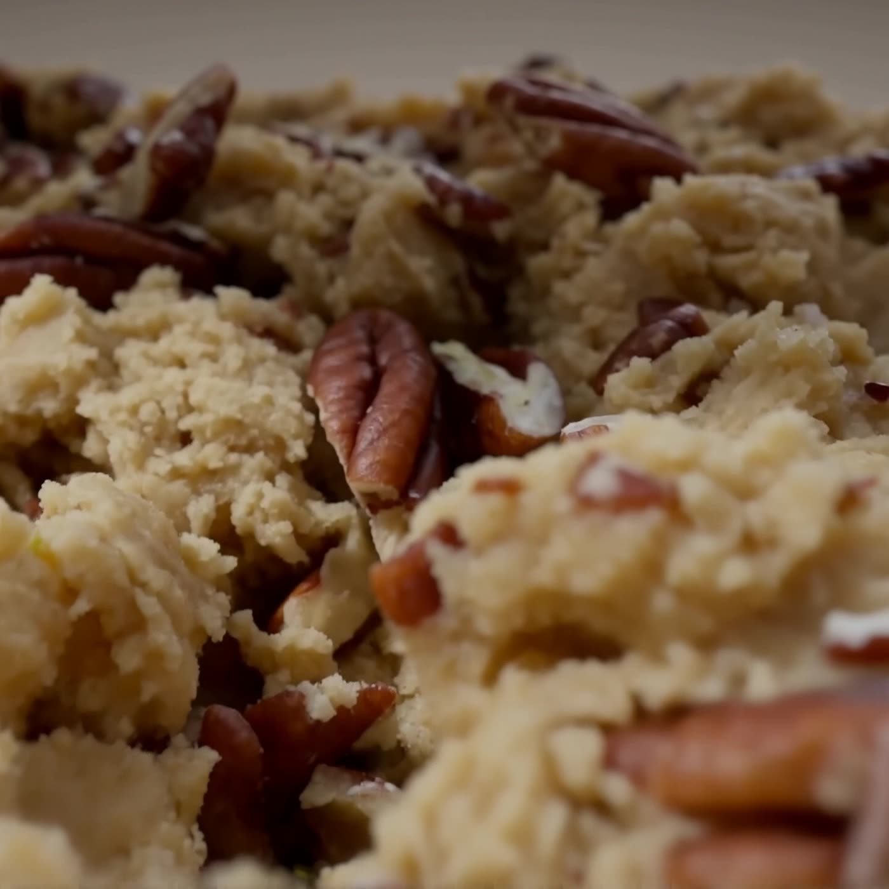

Toasted pecans
Dry-toasted until they darken and the oils come up, then broken by hand rather than chopped. Uneven on purpose — the big pieces give you the bite, the dust goes into the dough and turns the whole thing faintly savoury.
Baked in his name
Irish butter, cooked past golden. It is the difference between a cookie and this one.
Never milled. We want the pieces uneven, so every bite is a slightly different one.
Dark and white, in shards. Chips are engineered to hold their shape. We would rather they melted.
Baked to order, in batches small enough to count.
02 — Why there is a House at all
We didn't name it after him.
We named it for him.
His name was Rafeek. Almost nobody called him that. Somewhere in childhood he picked up Rocky — the way the best nicknames arrive, without ceremony and without anybody deciding on it — and it stuck so completely that people who knew him for years would blink at his real name on a form.
He was our brother. He is the reason this exists.
House of Rocky started the way a lot of good things start: in a kitchen, at an hour when nobody should be awake, because the alternative was sitting still.
Grief is strange about hands. It leaves your head useless and your hands looking for something to do. Ours found flour. In the months after we lost him, baking became the only part of the day that made any sense — measured, patient, and impossible to rush. You brown the butter and you wait. You rest the dough and you wait. Nothing about it can be hurried, and for a while that was exactly what we needed.
The cookie took shape slowly, and it took shape as him. Rocky never did anything by halves. He was the loudest person in a quiet room and the first to notice when somebody in it had gone quiet. He overfilled every plate he ever handed anybody. So there was never any question of restraint: pecans, dark chocolate, white chocolate, all of it, all at once, until the thing was almost too much — and then a pinch more, because that was him.
We started giving them away. To neighbours, to the people who had sat with us, to anybody who came to the door not knowing what to say. That is really all a cookie is for. It is something to hand over when there are no words available, and it says the thing anyway.
Enough people asked that eventually it became a business. House of Rocky — because a house is what he was. The one everybody ended up at.
So this is not a memorial, and we would rather it never read like one. It is a continuation. Every batch is made to the standard he would have held it to, which was high, and every box goes out the way he handed things over: too full, and without being asked.
Brother. The loudest laugh in the room, and the reason there is a room at all. Everything here is his.

Dry-toasted until they darken and the oils come up, then broken by hand rather than chopped. Uneven on purpose — the big pieces give you the bite, the dust goes into the dough and turns the whole thing faintly savoury.
Cut from a block into shards, never chips. A chip is engineered to keep its shape in the oven. We want the opposite: seams of it that run through the crumb and stay soft for hours after the bake.
The counterweight. Cocoa butter, no cocoa solids, so it goes sweet and slightly caramelised at the edges where it meets the tray — and cuts straight through the dark.
Browned butter, two sugars, and thirty-six hours of cold rest so the flour hydrates fully and the sugars go to work. Crisp at the rim, barely set in the middle. It is meant to be eaten warm, and soon.
The original, and the reason for all of it. Pecan, dark chocolate, white chocolate, browned butter. Deliberately too much.
Pecan · Dark 70% · White

Dark chocolate only, and more of it. Sea salt across the top before it goes in. For the people who find sweetness suspicious.
Dark 70% · Sea salt

Pecan and browned butter, nothing else. The dough on its own terms — which, if we are honest, is the one we make for ourselves.
Pecan · Vanilla · Browned butter
06 — The film
There is no version of this that gets faster. That was rather the point of starting it.
Boxes of six, baked to order and collected warm. Tell us when you'd like them and we'll confirm by email.
We'll confirm by email shortly.